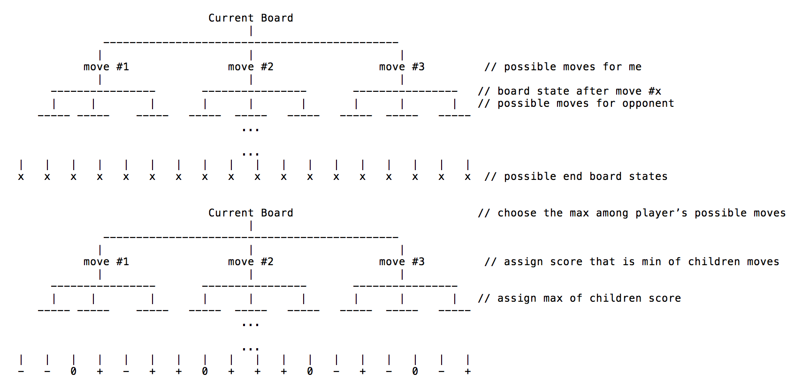

Elmthello is an implementation of the game Othello with the option to play an AI. It is implemented in Elm. I developed it with a partner - he did the front end while I developed the AI. There were two phases to development for the Othello AI: 1) implementation of MiniMax and 2) adding heuristics and observed insights to improve MiniMax's performance.
First, I implemented the structure for the MiniMax algorithm, a strategy for minimizing the maximum possible loss. It assumes the worst case scenario, in which the opponent chooses the best option for himself, and you choose the best option for yourself.
We first create a tree s.t. each level represents a person's turn. Each node in that level is a possible move that a player can take. The children of that node will be the opponent's possible moves after that move, and the children of those nodes will be the original player's possible moves after the opponent's moves. Ideally this tree would be built out from start to finish.

The end game board states are given a score of negative infinity if the opponent wins, positive infinity if the player wins, and 0 if there is a tie. We choose the move for the current board state by alternating between choosing the maximum among children nodes' score if it's the player's turn, or choosing the minimum among children nodes' score if it's the opponent's turn, because the opponent wishes to minimize the player's score, while the player wishes to maximize his own score. This works because it is in the opponent's best interest to minimize the player's score - if they choose another option, the outcome can only be the same or better for the player.
For the first phase, I implemented functions to build a tree of simulated moves, and then functions to surface the move with the best score according to MiniMax. Trees lend themselves well to functional programming because of recursion, so the logic behind these functions are quite intuitive. There is a discrepancy from the full version of MiniMax and my version though. It is not feasible to look ahead to the end of the game, as there would be a huge number of layers and nodes. Currently, the algorithm feasibly looks ahead 6 steps, but we have set it to 5 steps for faster gameplay. This number can be adjusted at the top of MiniMax.elm, as the variable named "depth".
The next phase was how to score moves. Since I cannot look all the way to the end game board state, I must score the leaves of the tree, the game board state after 5 moves. Here, we first encounter the idea of different regions of the board, and their worth.
Region 1 - Corners - Very Good
Region 2 - Edges - Pretty Good
Region 3 - Sets up for Opponent to take Corner - Very Bad
Region 4 - Sets up for Opponent to take Edges - Pretty Bad
Region 5 - Normal - Neutral opinion
-------------------------
|1 |2 |2 |2 |2 |2 |2 |1 |
-------------------------
|2 |3 |4 |4 |4 |4 |3 |2 |
-------------------------
|2 |3 |5 |5 |5 |5 |3 |2 |
-------------------------
|2 |3 |5 |5 |5 |5 |3 |2 |
-------------------------
|2 |3 |5 |5 |5 |5 |3 |2 |
-------------------------
|2 |3 |5 |5 |5 |5 |3 |2 |
-------------------------
|2 |3 |4 |4 |4 |4 |3 |2 |
-------------------------
|1 |2 |2 |2 |2 |2 |2 |1 |
-------------------------
The function "scoreBoard" calculates a score for board game states at the leaves of the tree of simulated moves. We calculate the percentage difference of how many of each type of tile that the player has vs. the opponent, and then multiply it by a weight. For instance, if player has 2 corners and the opponent has 1 corner, the score component based on corners will be cornerWeight * (2-1) / 4. 4 is the total number of corners possible. We sum up the score components over the various regions to get a score for the whole board.
The function "score" calculates a score for a move. If the move is for the player, it gets the maximum of the children. If the move is for the opponent, it gets the minimum of its children. It also uses weights again based on whether or not that move is in a special region.
After regions, the next characteristic I took into consideration is the stability of the player or opponent tiles on the board. I calculate stability for only the edge pieces, because that is much more simple than calculating it for all the pieces, and the edge pieces are important in comparison to other pieces anyway. An edge tile placement is stable if the opposing player cannot immediately reverse it. Either it is not bordered on one side by an opponent tile, or it is bordered by both sides by opponent tiles.
Stable tile placements for A:
| |a|a| |
|b|a|a|b|
Unstable:
|b|a|a| |
This is where pruning comes in. I prune the tree of simulated moves to increase the speed of our algorithm, and thus allowing us to increase the depth of looking ahead. If the move to take a corner is possible, the tree will stop developing other branches as the player will likely choose the corner. This is not true for certain (but in my opinion rare) cases, or if you are actually a pretty good Othello player. The gains of a pruned tree outweigh the lost opportunities. I also the prune the tree if stable edge placements are available. Then the algorithm will choose only amongst the stable edge possibilities, and stop developing the tree elsewhere. If the option of a corner set up move is present, I prune that branch out, as we likely will not want to take that tile.
After phase 1, the AI was not in great shape. It was fun to see the algorithm improve in leaps as I added more heuristics such as the regions and stability. The algorithm improved in chunks because adding a heuristic meant that the algorithm could use that heuristic to judge 5 or 6 steps out, multiplying the power of adding 1 more strategy. Stability turned out to be a real game changer, as it made the algorithm's decision process way more sophisticated and harder to trick. In fact, among the many many times I have now played Othello, I noticed that the AI was starting to implement multi-step maneuvers to trick me into placing tiles that eventually allowed it to take corners. I started identifying those patterns of course, but it was neat that the AI was able to teach me something new about the game. The beast surpasses the master.
Click here to challenge the AI yourself. (Note you can toggle the AI on or off; the default is off.)